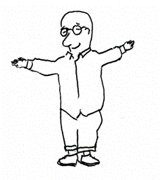
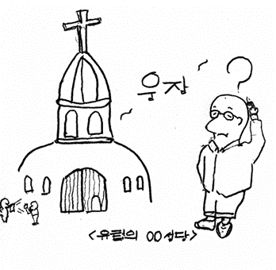
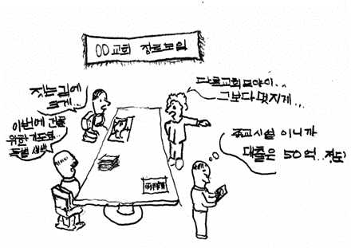

저는 르듀종이라 불리는 현업 건축가입니다.
건축가이기에 건축적으로 의미가 있는 여러 교회당을 찾아 다녀보았고, 외국에서도 성당등 여러 곳을 찾아 다녔습니다. “아름다움이란 뭘까? 좋은 교회란 뭘까? 옛날 오래된 멋진 성당처럼 나도 교회를 지어야 하나?” 많은 생각이 들었습니다. 정말 멋진 건축물이 많음을 느꼈고, 예술을 사랑하는 건축쟁이(건축가)로서 설계자에게 존경심이 들게 만드는 건물도 있었습니다.
하지만 제가 성경적인 종교관이 점점 형성되는 대학생 이후, 제가 좋다고 생각하는 교회당은 정말 찾아보기 어려웠습니다. 요즘 교회당 건축에 대한 저의 아쉬움은 무엇일까요? 그것은 교회 건물이 거대하고, 특이하게 지어지고 있다는 사실입니다. 건물의 훌륭함과 아름다움은 중요하지만, 예수님의 가르침을 생각할 때 교회당 건물의 크고 화려한 껍데기만 강조하는 것이 의미가 있는 것일까요?

교회는 교인이 모인 곳이 교회라고 합니다. 건물을 뜻하는 말이 아니죠. 예배당으로 호칭하는 것이 맞습니다.
두세 사람이 내 이름으로 모인 곳에는 나도 그들 중에 있느니라.
마태복음 18:20
과거 제사를 드리던 성전의 기능 상실로 인하여, 예수님 이후에는 명확하게 교회당은 ‘건물’일 뿐입니다. 교회건물을 짓기 위해 막대한 돈을 쓰는 것은 예수님의 말씀과도 상반됩니다.
제가 참 좋고 덕이 된다고 생각한 교회가 티비 다큐멘터리에 나오는 일이 있었습니다. 교회 건물이 오래 되었고, 공간도 좁아 사람들이 많이 들어오질 못해 시간 별로 나누어서 예배를 드리게 되었습니다(1부, 2부, 3부, 4부…….). 이러한 상황에서 교회는 더 큰 교회당을 세우지 않고, 성도들이 다른 교회로 흩어져 섬기는 것을 보았습니다. 개인적으로 이 모습이 건축적으로나 신앙적으로나 참 덕이 된다고 생각했습니다.
하지만, 요즘에 지어지는 교회의 건물들은 크고, 독특하고, 멋지게 지으려고 노력하는 것일까요? 새롭게 멋진 교회당을 짓는 것에 많은 이유를 대지만, 속내를 들여다 보면 큰 교회가 될수록 여러 ‘이점’들이 늘어나기 때문인 것 같습니다.
교회를 지을 때 꼭 크게 지어야만 할까요? 멋있어야 할까요? 교인들의 투표로 모양이 선택 되어지는게 좋은 것일 까요?

아니라고 생각합니다. 세속적인 눈으로만 보더라도, 큰 교회당은 건물 유지 관리 비용이 엄청납니다. 여름이면 교회의 전기세도 천 만원 단 위는 기본이라고 하지요. 장기적으로나 단기적으로나 커다란 건물은 유지관리에 억 단위에 금액이 들어갑니다. 그 돈은 예수님께서 화려하고 크고 휘황찬란하여 보는 사람으로 하여금 건물의 위상을 높아지게 지으라고 우리에게 허락하신 돈은 아닐 것입니다.
우리는 ‘교회당’이 아닌 ‘교회’로 눈을 돌리고, 우리의 이웃 섬기고, 사랑하며, 그들을 바라보고, 예수님께서 행하신 사랑을 우리의 행동으로 그 사랑을 꽃피워야 합니다. 때때로 그 행동들에는 물질이 필요 할 때도 있습니다. 선한 사마리아인과 같이 이웃을 위해 자신의 가진 물질을 내어 주는 것은 교회에 필요한 덕목입니다. 그런데 그 물질을 자신을 치장하기 위해 쓴다면 예수님은 얼마나 속상하실까요?
저는 아마 목사님들은 적당한 사이즈의 교회의 크기 알고 있다고 생각합니다. 말씀을 선포하거나, 교인들의 나눔(구성원과의 나눔)을 할 수 있는 교회의 크기가 어느 정도 인지 충분히 알고 계실 것이라고 생각합니다. 그렇다면 성도에게 정확히 알려주는 것도 목사님의 의무가 아닌가 생각이 듭니다.
그래서 교회에서 설계를 의뢰 할 때 디자인을 하는 건축가(사)에게 우리의 교회의 방향과 목적성을 분명이 밝혀야 합니다. 과대하게 짓지 말고 여건에 맞춰서, 되도록 재정을 아끼고, 튼튼해서 유지 관리비용이 적게 들고, 다용도로 사용 할 수 있고, 멋으로 인해 냉 난방비를 써야 하는 건물이 아닌, 교회에 목적에 맞는 건물을 지어야 합니다. 그리고 그 재정은 이웃에게 예수님의 사랑이 무엇인지 보여줄 수 있는 수단이 될 수 있도록 해야 합니다. 그리고 어쩔 수 없이 건축하는 상황 이여도 기도로 하나님께서 원하시는 방향이 무엇인지 알 수 있도록 해야 할 것입니다.
이번에 이러한 취지로 교회건물 어떻게 만들어야 할까? 란 주제로 하나하나 이야기를 적어 갈려고 합니다. 아마 보시는 분들은 ‘아 이런 부분은 이게 문제였구나’ 라고 하는 건축 기술이야기를 들으시면서 교회건물에 대해서 이제 하나씩 더 나은 방법으로 설계 하는 방법을 아시게 될 것이고, 더 나아가서 교회를 새로 건축해야 하시는 분들에게 도움이 됐으면 좋겠습니다.
우리는 마지막 때를 살아가고 있습니다. 예수님이 오시는 시간이 점점 다가오는데, 영구적으로 사용할 화려하고 역사적(?)인 건축물이 어떤 의미가 있을지 생각해 봅니다. 임박한 전쟁을 준비하는 필수적인 것들만 존재하는 군대의 병영과 같은 건물이 우리에게 필요한 것이 아닐까 생각해봅니다.
르듀종 건축가는 여러분들의 교회 건축을 돕고자 합니다. 연락을 기다립니다.
글 르듀종